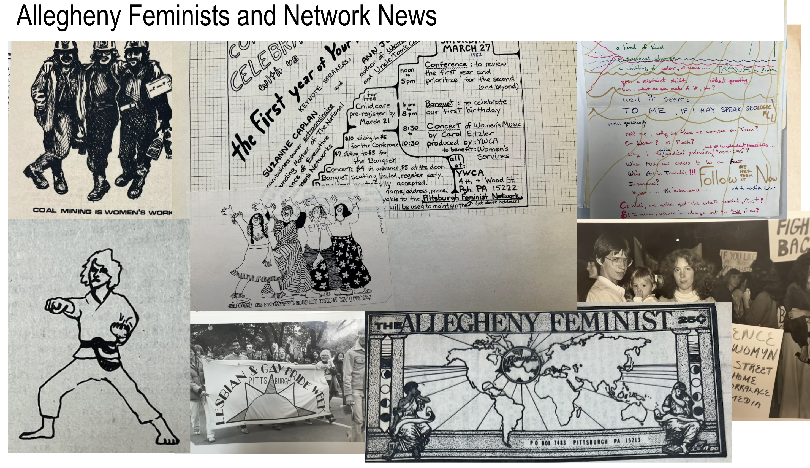
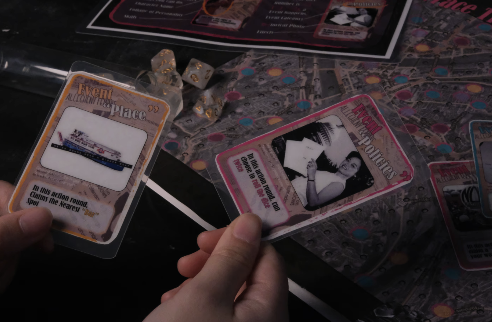
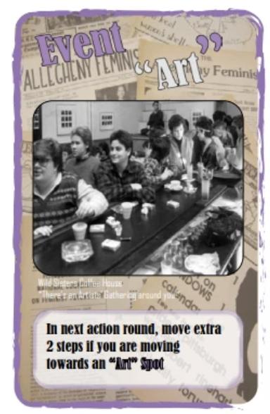
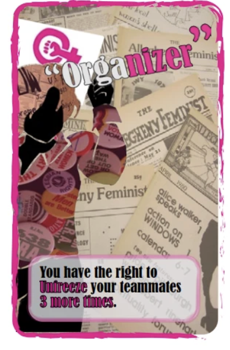
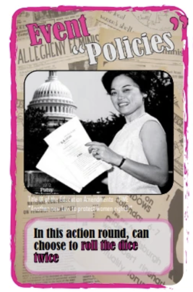
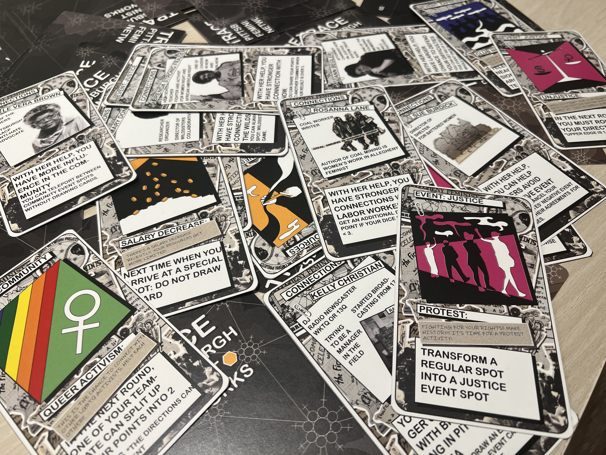

A Newspaper

Nearly forgotten today, The Allegheny Feminist carried news, arguments, events, and addresses between feminists in Pittsburgh. It began in 1976 and later continued as Network News.
Those issues became the main source for Trace’s research and imagery. I translated their record of everyday life, political pressure, and collective hope into a game of movement and chance. I think of it as documentation you can enter.
Publication history: University of Pittsburgh Archives & Special Collections ↗ · Pitt Rare Books ↗
First Iteration
An early board used a fixed path and a reunion goal. The final game opened that path into a city of possible encounters.




FIRST ITERATION / CARDS + BOARDEarly cards and board. Their rules belong to the first iteration.
20 Spots
Each numbered point on the map is linked to a specific address card. The people and events between them make every route different.

Take a turn.
Leave a trace.
Choose a starting hexagon and explore at your own pace, alone or with up to three others.
PLAY TRACE